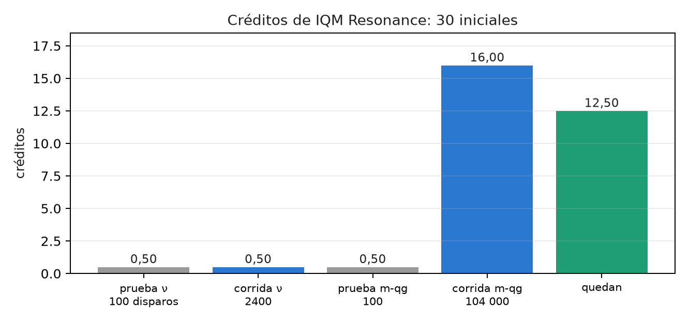
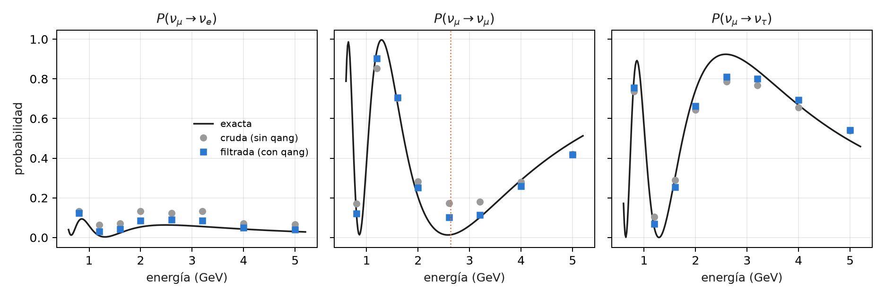

31 Primer experimento en hardware real: IQM Resonance
Hasta acá, casi todo el libro se midió en simuladores con modelos de ruido de dispositivos. Este capítulo cuenta cómo se llevó qang a un chip superconductor real, Garnet de IQM (20 qubits), con créditos de prueba: por qué ese equipo, cómo se ensayó gratis, cuánto costó y qué salió. Las cifras se recalculan de los archivos guardados de las corridas con tools/make_cap31_figures.py. No se envía nada a IQM y no hace falta iqm-client para verificarlas.
31.1 Desde la base: qué se lleva al chip
La lectura de un qubit real es la misma del capítulo 1: se cuentan ceros y unos, y \(qg_Z = 2p_0 - 1\). Lo que cambia es todo lo que rodea esa cuenta: el circuito se compila a las compuertas nativas del chip, la lectura tiene errores propios y cada disparo cuesta créditos. qang aporta tres cosas, todas en el posprocesamiento:
- el filtro de peso, si el circuito lo conserva;
- el testigo que dice cuánto quitó el filtro (la fracción conservada);
- la lectura en m-qg, donde una diferencia de probabilidad de 0,0005 es 1 m-qg.
31.2 Por qué IQM, y qué cuesta compilar
Garnet tiene compuertas nativas PRX (una rotación de un qubit, r en Qiskit) y CZ, sobre una red cuadrada. El experimento elegido (neutrinos de tres sabores) usa compuertas XX+YY, que conservan el peso. El script compila en una línea de tres qubits a los tres juegos nativos:
seed_transpiler 137).
| juego nativo | RBS | XX+YY | circuito de neutrinos, nivel 1 | nivel 3 |
|---|---|---|---|---|
| IQM (r, cz) | 2 | 2 | 18 | 12 |
| IBM Heron (cz, rz, sx, x) | 2 | 2 | 18 | 12 |
| IBM Eagle (ecr, rz, sx, x) | 2 | 2 | 18 | 12 |
Las notas (§165) contaban 12 CZ en IQM contra 18 compuertas de dos qubits en IBM. La diferencia no es del chip: el ensayo de IQM se compiló con el nivel de optimización 3 y las corridas de IBM de §151 con el nivel 1. Con el mismo nivel, los tres juegos dan lo mismo: las seis XX+YY del circuito cuestan dos compuertas de dos qubits cada una. IQM se eligió por los créditos disponibles, no por una compilación más barata.
31.3 El módulo qang.iqm
El índice anunciaba un módulo qang/iqm.py, análogo a qang/ibm.py. Las dos corridas de este capítulo se hicieron sin él: los scripts examples/iqm_neutrino_qg.py y examples/iqm_milliqang_qg.py leen los conteos con qang.interop (canonical_counts, qg_z_profile, filtered_qg_z_profile, weight_filter). El módulo se escribió después, con lo que esas corridas dejaron pendiente:
- Corrección de lectura. En §165 no la hubo: los modelos simulados de IQM no publican los errores de lectura en el
targetde Qiskit, donde los buscaqang.ibm, sino en un perfil de errores propio.qang.iqm.readout_errorslos lee de ahí. Para un dispositivo real,pole_circuitsyreadout_from_poleslos miden con dos circuitos, todos los qubits en \(|0 angle\) y todos en \(|1 angle\), como se hizo en §168. Con los conteos guardados de §168 da \(e_0=0{,}0055\) y \(e_1=0{,}029\).iqm_qgaplica la inversión deqang.ibmy da las cuatro lecturas: cruda, corregida, filtrada y filtrada después de corregir. - Elección de la cadena.
best_chaincompara la disposición por defecto con cadenas de la red cuadrada y se queda con la de mayor fracción conservada prevista (predict_kept_fraction, con las compuertas y unidades de IQM). - El paso que conserva el peso. La compuerta nativa de un qubit de IQM no conserva el peso compuerta por compuerta, así que
check_weightrevisa el circuito antes de compilar.
El ensayo gratis en el modelo de Garnet (examples/iqm_readout_chain_qg.py, los ocho circuitos de §165, 4000 disparos) da error crudo 0,124, filtrado 0,055 y filtrado después de corregir la lectura 0,047: la corrección que faltaba en §165 quita otro 15 %. La fracción conservada simulada es 0,689 y la prevista queda entre 0,640 y 0,775, menos ajustada que en IBM. La elección de cadena casi no distingue entre cadenas (0,777 contra 0,775), porque los qubits del modelo son casi iguales. Nada de esto se probó todavía en el chip real.
31.4 Ensayo gratis antes de gastar
IQM publica modelos simulados de sus chips. El circuito de neutrinos se corrió primero ahí, con 4000 disparos y 8 energías (docstring de examples/iqm_neutrino_qg.py):
| modelo | parecido a | error crudo | error filtrado | factor | conservado |
|---|---|---|---|---|---|
| IQMFakeApollo | Garnet | 0,1263 | 0,0584 | 2,16 | 0,688 |
| IQMFakeAphrodite | Emerald | 0,1161 | 0,0515 | 2,25 | 0,708 |
El ensayo del milli-qang (§168) también pasó sus cuatro predicciones en los dos modelos antes de correr en el chip.
31.5 El presupuesto: lo planeado y lo gastado
La cuenta empezó con 30 créditos. El plan era gastar un 10 % en pruebas, un 60 % en el experimento principal y guardar un 30 % de reserva. El token se lee sólo de la variable de entorno IQM_TOKEN, y ningún script gasta créditos sin la bandera --yes-i-accept-qpu-cost.
| paso | disparos | créditos | saldo |
|---|---|---|---|
| prueba de neutrinos | 100 | 0,50 | 29,50 |
| corrida de neutrinos | 2400 | 0,50 | 29,00 |
| prueba del milli-qang | 100 | 0,50 | 28,50 |
| corrida del milli-qang | 104 000 | 16,00 | 12,50 |
- Gastado: pruebas, 3,3 %; corridas, 55,0 %; quedan 12,50 créditos (41,7 %). El plan se cumplió con margen.
- El modelo de costo se corrigió con datos. La primera estimación, 0,50 créditos por trabajo, venía de trabajos chicos y estaba mal. El costo crece con los disparos (unos 0,15 créditos cada 1000) y tiene un piso de unos 0,50 por trabajo.

31.6 El experimento principal: neutrinos de tres sabores
Es el circuito del capítulo 9 (§151): un \(\nu_\mu\) inicial, 1300 km de base, \(\delta_{CP}=-\pi/2\), ocho energías entre 0,8 y 5 GeV, y los tres sabores leídos a la vez. Tiene 3 qubits, 12 CZ y todas sus compuertas conservan el peso. El script quedó congelado (sha256 b320f51f en examples/data/iqm_neutrino_qg.prereg, commit a74c07c) antes de enviar ningún trabajo, con cuatro predicciones:
| predicción | resultado |
|---|---|
| I1: el error filtrado queda por debajo del crudo | 0,0386 < 0,0615 |
| I2: el cociente crudo / filtrado es al menos 1,5 | 1,59 (por poco) |
| I3: la supervivencia filtrada tiene su mínimo en 2,6 GeV | sí; la cruda, en 0,8 GeV |
| I4: se conserva al menos la mitad de los disparos | 0,880 |
El script recalcula todo desde el archivo guardado:
- Por sabor, el filtro baja el error de \(\nu_e\) de 0,054 a 0,023 y el de \(\nu_\mu\) de 0,069 a 0,041. El de \(\nu_\tau\) casi no cambia (0,062 → 0,052).
- El máximo de oscilación vuelve a su lugar. Sin filtro, la supervivencia más baja se lee en 0,8 GeV. Con filtro se lee en 2,6 GeV, y el máximo exacto está en 2,63.
- Lo que queda está dentro del sector. En 2,6 GeV la supervivencia exacta es 0,013, la cruda 0,173 y la filtrada 0,101. El filtro no ve ese error (capítulo 22).

31.7 Lo que vino después, y lo que queda
- El milli-qang en Garnet (§168, capítulo 28) usó la mayor parte de los créditos. Se cumplieron 3 de 4 predicciones: una X cuesta 1,64 m-qg y el costo crece en línea recta con el número de compuertas. La dispersión de las copias en el ecuador fue la mitad de la esperada (M2 falló), y eso sigue abierto.
- La réplica en cinco qubits y dos días está preparada en
examples/iqm_milliqang_replication_qg.py, todavía sin pre-registrar ni correr. A tamaño completo (130 circuitos × 4000 disparos por día) costaría unos 80 créditos por día, mucho más de lo que queda: hay que achicarla antes de usarla. - Los candidatos del índice siguen pendientes: la P-CTC con un qubit (§164), el decodificador de Yoshida–Kitaev (8 qubits y 90 compuertas de dos qubits en los modelos de IBM, probablemente demasiado profundo) y H₂ (§20, §128). La corrida de H₂ en IonQ fue rechazada antes de aceptar ningún trabajo y no se cobró nada.
Con 12,50 créditos y unos 0,15 cada 1000 disparos quedan unos 80 000 disparos, menos los pisos por trabajo.
31.8 Resultado: aciertos, fallos y comparación con la simulación
| modelos de IBM (§151) | modelo de IQM (ensayo) | Garnet (real) | |
|---|---|---|---|
| error crudo | — | 0,126 | 0,062 |
| factor del filtro | 2,97–3,83 | 2,16 | 1,59 |
| disparos conservados | — | 0,688 | 0,880 |
El chip fue mejor que su modelo: tuvo la mitad de error crudo, y por eso salieron menos disparos del sector y el filtro tuvo menos para quitar. Es la regla del capítulo 21 vista en hardware: el filtro rinde en proporción al ruido que saca del sector. Una sola corrida, un día, 300 disparos por circuito: no hay afirmación sobre la estabilidad.
31.9 Sin qang y con qang
| acción | sin qang | con qang | diferencia |
|---|---|---|---|
| error medio de las probabilidades | 0,0615 | 0,0386 | 1,59 veces menos |
| energía del máximo de oscilación | 0,8 GeV | 2,6 GeV (exacta 2,63) | el filtro corrige la física que se lee |
| error de \(\nu_\tau\) | 0,062 | 0,052 | casi nada: es error dentro del sector |
| costo | 2400 disparos, 0,50 créditos | los mismos disparos | ninguno: el filtro es posprocesamiento |
| disparos útiles | 2400 | 2113 (88 %) | se descarta un 12 % |
| compilación | 12 compuertas de dos qubits | 12 | ninguna: depende del nivel de optimización |
Balance. El primer dato en hardware real confirma lo que la simulación decía, con un efecto más chico: 1,59 veces contra 2,2 en el modelo de IQM y entre 3 y 3,8 en los de IBM. El filtro no cuesta disparos extra y pone la oscilación en la energía correcta. Del plan original, la ventaja de compilación de IQM era un artefacto del nivel de optimización, y el módulo qang.iqm se escribió después de las corridas, que no lo usaron.
31.10 En código
import json
import numpy as np
d = json.load(open("examples/data/iqm_neutrino_qg_run.json"))
raw, fil, ex = (np.array(d[k]) for k in ("raw", "filtered", "exact"))
np.abs(raw - ex).mean(), np.abs(fil - ex).mean() # 0,0615 y 0,0386
d["energies"][int(np.argmin(fil[:, 1]))] # 2,6 GeV: el máximo de oscilación31.11 Resumen
- En Garnet, con hardware real, el filtro bajó el error 1,59 veces y llevó el máximo de oscilación de 0,8 a 2,6 GeV (exacto 2,63). Las cuatro predicciones pre-registradas se cumplieron.
- El chip fue mejor que su modelo simulado, y el filtro ganó menos (1,59 veces contra 2,16).
- La ventaja de compilación de IQM (12 contra 18) era del nivel de optimización: con el mismo nivel, IBM también da 12.
- Se gastaron 17,50 de 30 créditos, a unos 0,15 cada 1000 disparos con un piso de 0,50 por trabajo.
qang.iqm, escrito después de las corridas, agrega la corrección de lectura y la elección de cadena. En el modelo de Garnet la corrección quita otro 15 % del error filtrado; en el chip real todavía no se probó.
Notas bibliográficas
El acceso fue por IQM Resonance (IQM Quantum Computers 2026); el procesador Garnet está descrito en Abdurakhimov et al. (2024). La compilación usa Qiskit (Javadi-Abhari et al. 2024), y los parámetros de oscilación son del tipo de Esteban et al. (2020). Las notas de investigación numeradas (§) que cita el capítulo y los scripts que lo verifican están en el repositorio (Monteverde 2026a); la definición de la unidad qang, en Monteverde (2026b).